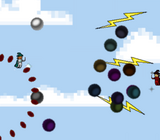

For your entertainment.
Navigate a metal ball through magnet-driven mazes to reach the goal in each level. Available on Google Play and the Amazon App Store!
A unique, meta, puzzle platformer demo featuring developer art. Tear the build apart before the developers remove you from the game!
A fast-paced competitive button mashing contest! Face-off 1 vs 1 and choose the best combo of spells for a wizard fight!
Juliet is the star, or rather stars, of this dark puzzle platformer. Use your clones to make your way through deathly puzzles.
A short tribute in memory of Satoru Iwata. Some stars climb, some stars soar, and in this small game, Satoru shines forever.
A fan sequel to "Big Rigs: Over the Road Racing." In races up to 4 players, compete with friends to find out who can rig 'er bigger!'
A 2 player race through the city sky at night time. In this Rocket League tribute, use your rocket boost to fly over the course to victory!
Meet Graey: a lonely, abstract character moving through a hand-drawn world. This demo offers a few minute sample of something interesting.
A puzzle game adaptation of Conway's famous math simulation, challengers attempt to turn unstable layouts into a "still-life".
Take a Stroll through a series of peaceful but thought provoking puzzles; match the color of your goals while using leap-frog movement.
Paint over the light gray patterns and then exit the path in order to complete a level! Sounds easy enough! What's your Streak?
A demo for a modern throwback to the classic N64 3D platformer collect-a-thon! Shape shift to change abilities and find all the things!